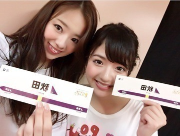
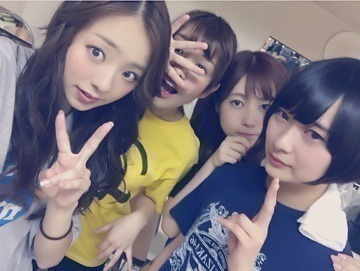
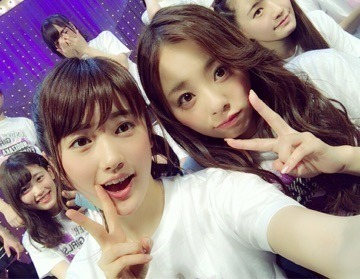
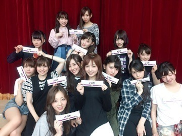

お疲れ様です.＊
かわむら まひろです♡
まず初めに，「まあや18歳のお誕生日おめでと～う^ ^」 まあやは可愛い可愛いよー.＊

はい，そしてですね，
東北ツアー，無事完走致しました！
あっという間の1週間でした！
っていうのは，私自身本当に今回のライブを楽しんでいたんだと思います♡♡
今回のライブは，今までやった事ない事に挑戦しました．
振り付けが新しくなったり，「THE ライブ‼︎」って感じではないオープニングとエンディングだったり... 最初は今回のやり方に戸惑ったメンバーもいました． 私はその時少しショックでした... 最後までやってみなきゃ分からなくない？って思っていました． でも皆が千秋楽の山形公演を終えた後，「本当に楽しかった！」って言っていました>_<♡♡
それがとても嬉しかったんです.＊
みんなが「楽しかった！」という同じ気持ちでゴールを迎えられたことに...♡
私は，本当にliveが大好きです．
なので，アンダーで全国ツアーをするって決まった時は心から嬉しかったんです．
アンダーで全国をまわるってのが私の夢でもあったから...（ ; ; ）
次はどこに行くんだろう。。
それもまだ決まっていないけど，既に次のアンダラが楽しみです♡ぇへへ
liveに来てくれた皆さん，応援しててくれた皆さん，本当にありがとうございました！！
私が今こんなに元気なのは皆さんのおかげですっ♡‼︎ これからもこんな私ですがよろしくお願いします（ ; ; ）♡ノ

蘭世，ことこ，崎さんも次は一緒にliveしたい♡

live後，現地の地方シールを持って写真を撮るのが恒例行事だったよ♡

そしてそして‼︎
次のアルバムの握手会が決まりました☆
いつもと時間が変わりました‼︎
6/25と7/10（横浜）の個別握手会は，1部と2部（10:00～11:30と12:00～13:30）になりました♡
6/18（京都）の個別握手会は，3部（14:30～16:00）になりました♡♡
なので，時間的に今まで来れなかった方も是非来て欲しいなんっ(#^.^#) まってます.＊
ではでは，またblog更新します！
またね♡